afterform
Keep the good part.
Second impression
The garment retains its character; the repair gives it a deliberate new detail.
Selected for fashion relevance, practical UI contrast and distinction from the seven existing projects.
Fashion character. Workshop clarity.
One identity, from the label to the repair desk.
These are original direction studies. The selected territory combines a material-led repair story with a colour relationship the existing portfolio does not use.
Keep the good part.
The garment retains its character; the repair gives it a deliberate new detail.
Selected for fashion relevance, practical UI contrast and distinction from the seven existing projects.
REPAIR. REWORK. REWEAR.
A practical repair bench becomes a system of instructions and tools.
Blue/coral and operational strips overlap the existing ImHere and Loopline territories.
A piece of your story.
A personal object carries memory across generations.
Green and warm paper overlap Holland and Loopline; a literary tone overlaps Novella.
Editorial wordmark. The name remains readable and translates cleanly into print.
A divided construction. More mechanical, but less fluid in the small garment label.
A compact signature. Useful as a secondary mark, too abstract to introduce the service.
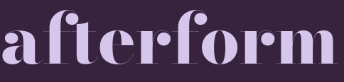
| Rule | Specification | Reason |
|---|---|---|
| Clear space | At least half the lowercase letter height on each side. | Let the fine strokes remain distinct from rules, edges and nearby copy. |
| Minimum wordmark | 120 px digital / 25 mm print; inspect a physical proof. | Use the compact mark when the full name becomes too small. |
| Compact mark | 24 px recommended; keep the 16 px favicon as a separate small-context check. | Small sizes need recognition, not the full lockup. |
| Colour versions | Plum on poplin or lilac; lilac on plum; solid black for one-colour use. | No gradient, bevel or artificial metallic treatment. |
| Misuse | Do not stretch, outline, add a drop shadow, condense or use red text on lilac at small sizes. | Protect the drawn proportions and legibility. |
A little more
life in a piece.
Expressive headings, publication openings and the wordmark. Optical-size variation is reserved for display; functional reading stays in Karla.
Tell us what you notice.
17 px body / 1.6 line height. Labels stay visible. Controls use at least a 48 px target wherever the task requires an action.
INCONSOLATA / THE RECORDAF-S01 / M01
REPAIR · REWEAR · RECORD
13–14 px metadata digitally. Repair codes supplement plain language; they never replace it.
Plum carries information. Lilac gives the service warmth. Vermilion marks emphasis and the visible repair. Poplin leaves enough quiet space for reading.
| Pair | Measured contrast | Use |
|---|---|---|
| Primary text / paper | 13.32:1 | Normal text contrast threshold met |
| Primary text / lilac | 8.88:1 | Normal text contrast threshold met |
| Accent text / paper | 5.15:1 | Normal text contrast threshold met |
| Large display only / lilac | 3.43:1 | Large display only |
| Reversed text / vermilion | 5.15:1 | Normal text contrast threshold met |
| Secondary text / paper | 6.07:1 | Normal text contrast threshold met |
| Success / paper | 6.76:1 | Normal text contrast threshold met |
Ratios are calculated from sRGB colours. They are one part of accessibility, not a full WCAG conformance claim. RGB PDFs are design proofs; use the printer’s paper/profile and a physical colour proof for production.
24 px grid; 1.75 px strokes; square ends and disciplined corners. Icons keep their text labels in the interface and signs. The repair-joining motif is functional: it distinguishes a close match from a visible intervention.
Hole / worn area
Open seam
Zip
Button
Length adjustment
Assessment

170 × 240 mm. Twelve pages. Saddle-stitch direction. A two-column underlying grid with 16 mm outer margins and a consistent footer. 11–12 pt main reading text; larger editorial interruptions create pacing.
The sequence moves from the reason to repair, through finish choices and the repair index, to a proposal comparison and a garment record. The exact content is available as readable HTML as well as PDF.
Read all twelve pages ↗Download guide PDF


Three 60 × 100 mm tag variants share an ID, repair code and human-readable description. The 4 mm hole has its own clear area. The reverse contains a QR and a typed fallback ID.
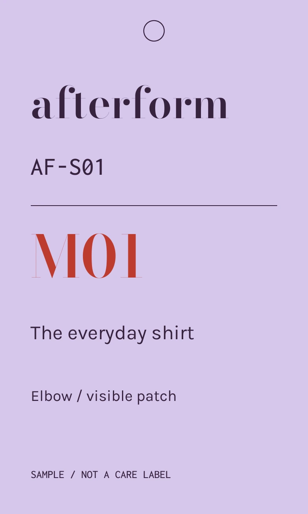
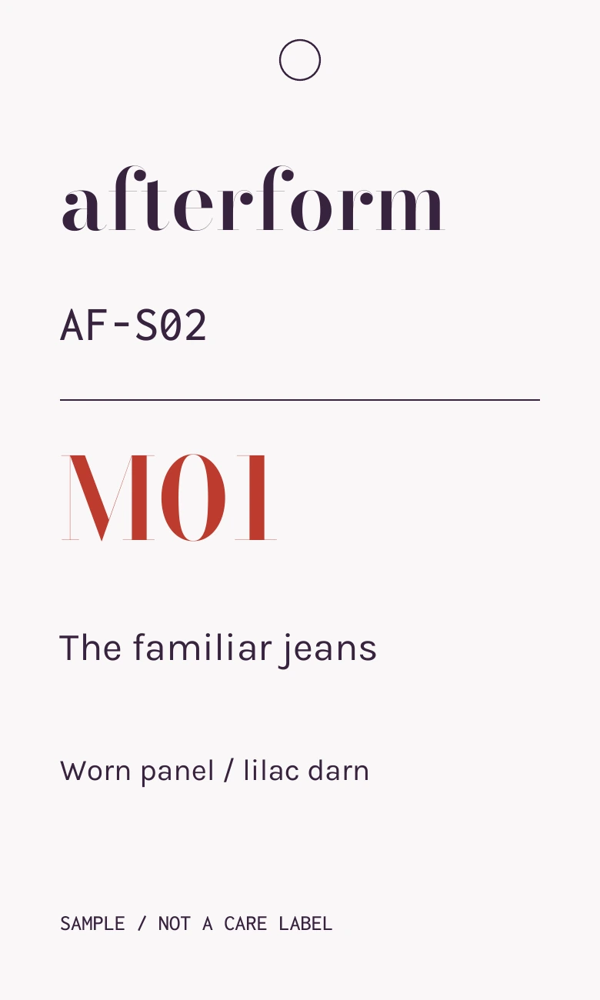
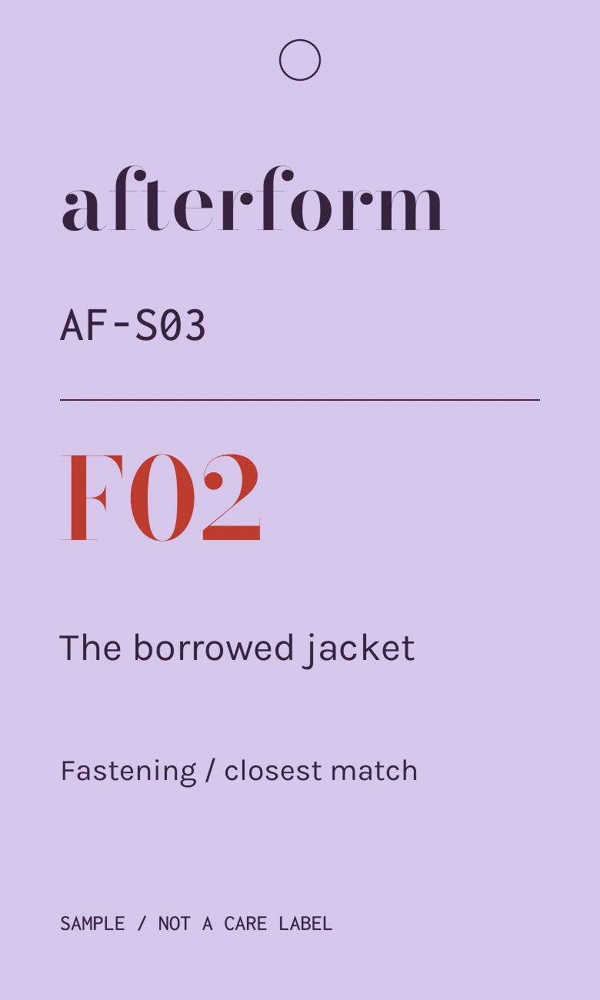
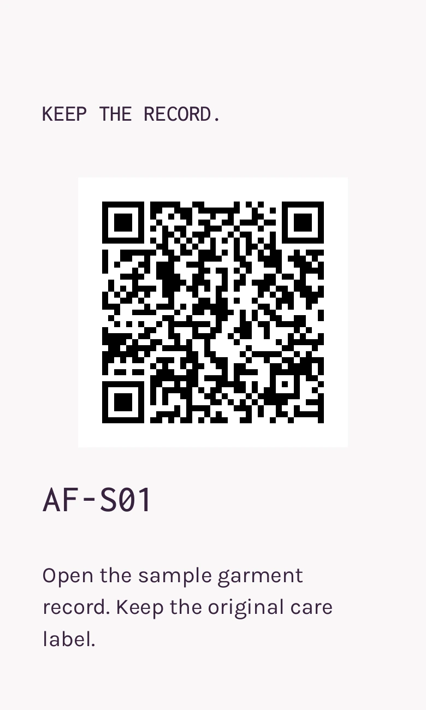
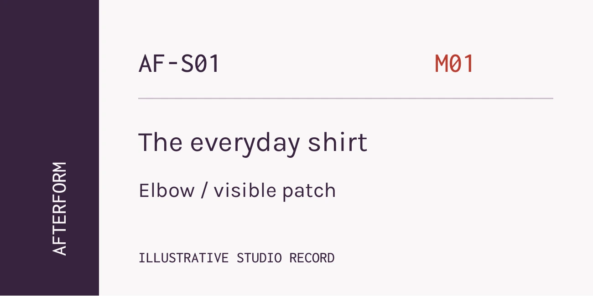
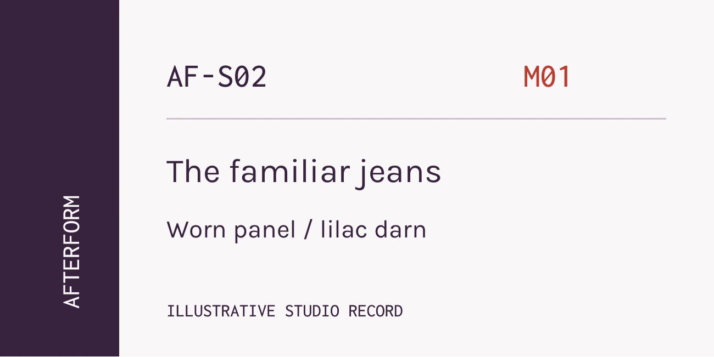
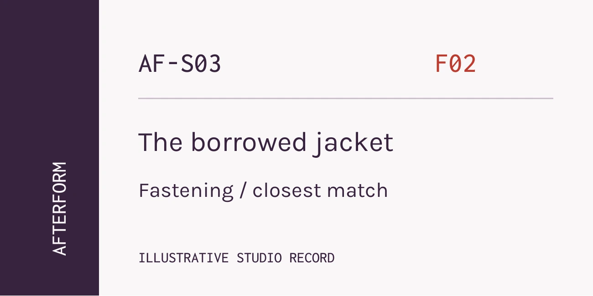
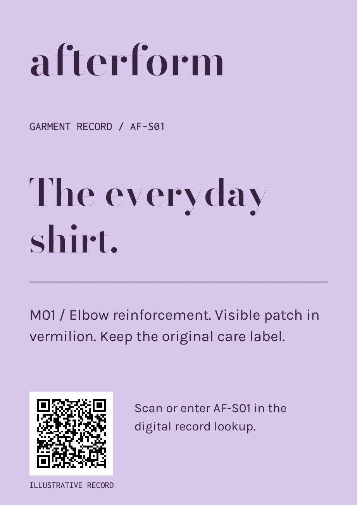
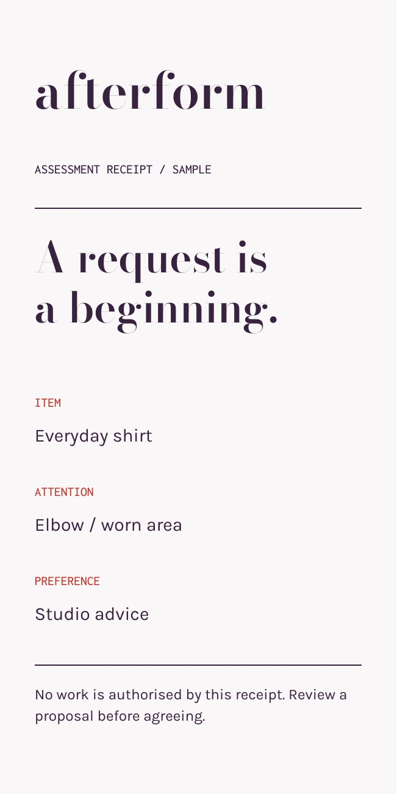
The ID is stable. The garment name is readable. The repair code supports matching. A small receipt explicitly says that it does not authorise work.
These detachable service pieces supplement the original care label. Unknown materials and unverified washing instructions are not invented.
Download all eleven print faces ↗
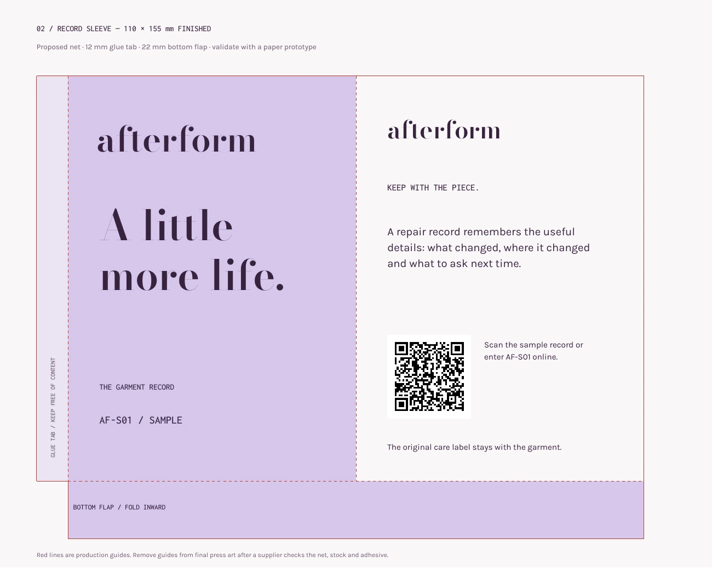
A 150 mm front, two 120 mm information panels and a 30 mm overlap. The flat artwork shows 3 mm bleed and nominal folds. The band gathers information around a reusable garment wrap.
Front and back panels, a 12 mm glue tab and a 22 mm bottom flap. The construction is explicitly shown; fold positions and tolerances need a paper prototype before manufacture.

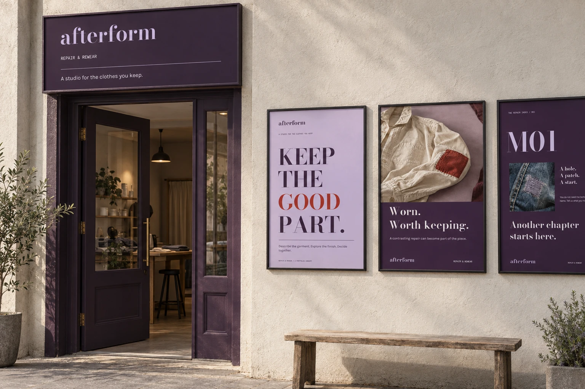
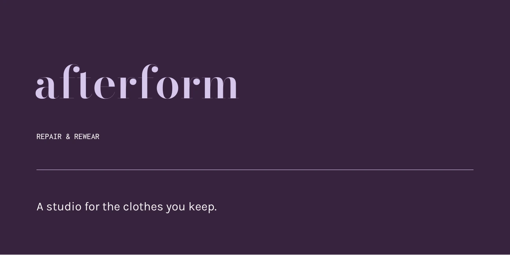
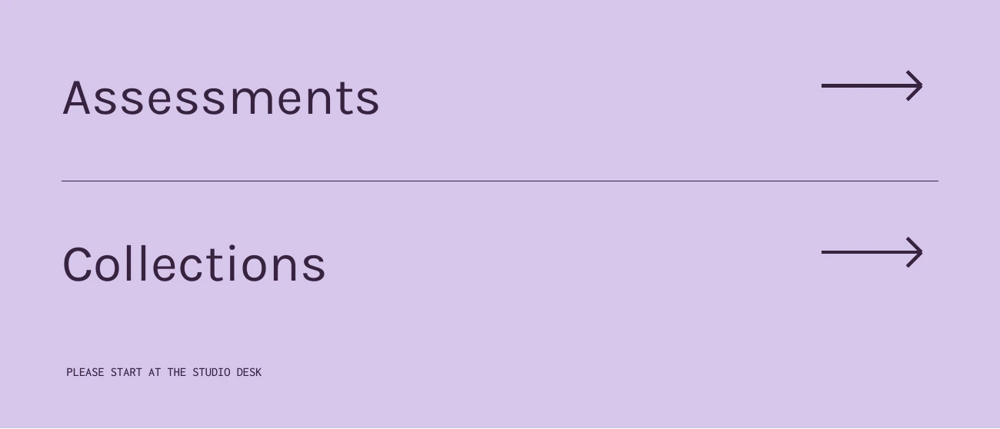
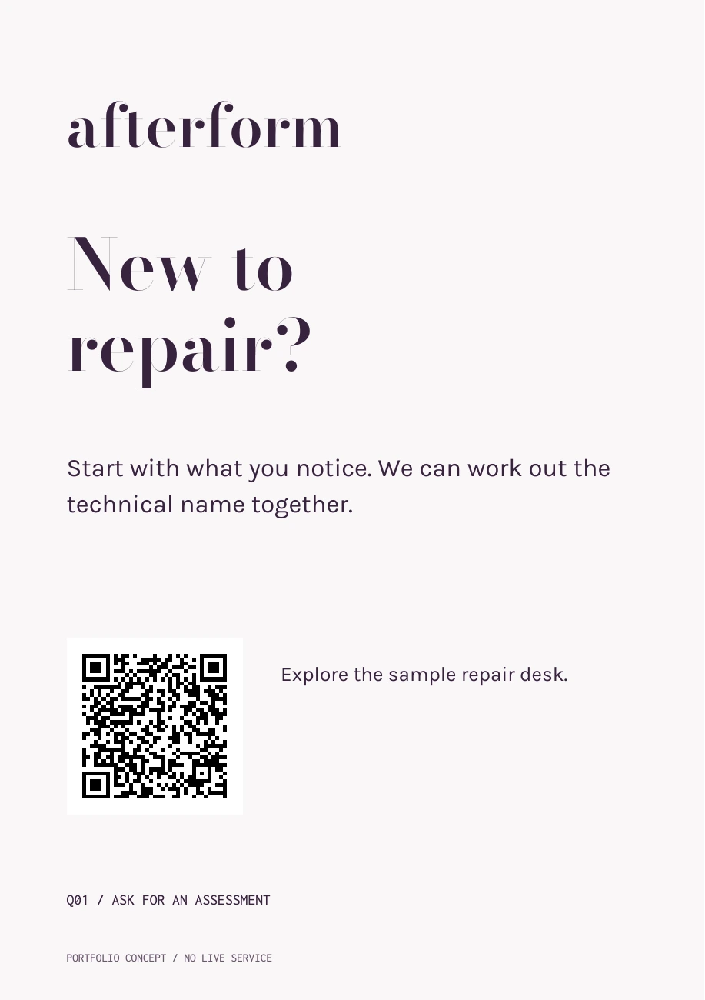
Brand typography welcomes visitors at the entrance. Functional directions use sturdy Karla lettering, explicit destination names and arrows. Final mounting height, viewing distance, lighting and glare require an installation review.
Inspect signage PDF ↗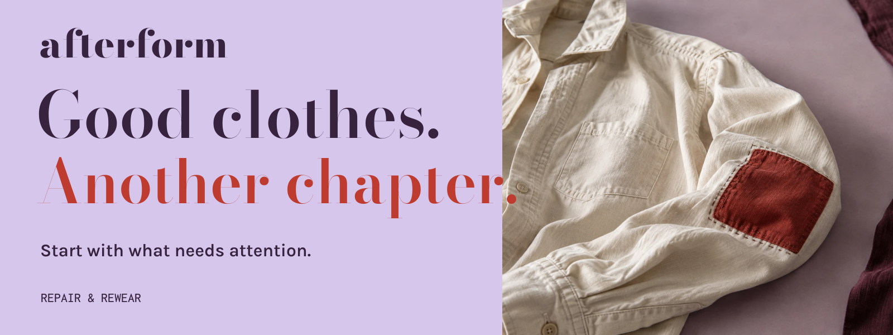
A reversible local demonstration.
The visible border and text state communicate selection without colour alone.
Preparing the example record…
An explicit state demonstration; no network request.
160 ms colour response; 280 ms line reveal. Reduced-motion preferences remove the movement.
The real product also includes required-choice errors, no-result recovery, empty requests, missing records, storage failure, draft cancellation and revision-sensitive approval.
Inspect the working screens ↗Flat artwork, local fonts and working source are included in the complete portfolio export. The PDFs are design proofs rather than press-certified production files.
Read the full project strategy and implementation handoff ↗


{kind=link}
{kind=link}
{kind=link}
{kind=link}
{kind=link}
{kind=link}
{kind=link}